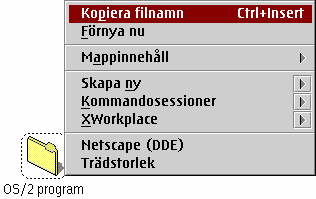

Om du valde "Kopiera filnamn" utan att h†lla ner "Shift" tangenten, kommer &xwp; endast att kopiera sj„lva filnamnet.
Om du h”ll ner "Shift" tangenten n„r du valde "Kopiera filnamn", kommer &xwp; att kopiera hela det fullt kvalificerade filnamnet, m.a.o. enhetsbeteckning, s”kv„g och sj„lva filnamnet.
Antagande att mappen ovanf”r p† sk„rmbilden ligger p† Skrivbordet, Kommer "Kopiera filnamn" att kopiera "C:\Skrivbord\Mapp" till Urklipp, om du h†ller ner "Shift" tangenten, Endast "Mapp" annars.
Detta fungerar nu (V0.80) ocks† n„r du har mer „n ett objekt valt i mappen. I det h„r fallet, kommer filnamnen p† de valda objekten alla att kopieras till Urklipp, separerade av mellanslag.
&xwp; definierar ocks† Ctrl+Insert som standard mappsnabbkommando f”r kopiering av filnamn(en) hos de f”r n„rvarande valda objektet(en).
Du kan avaktivera menyposten och „ndra snabbkommando(n) p† Globala Inst„llningar.